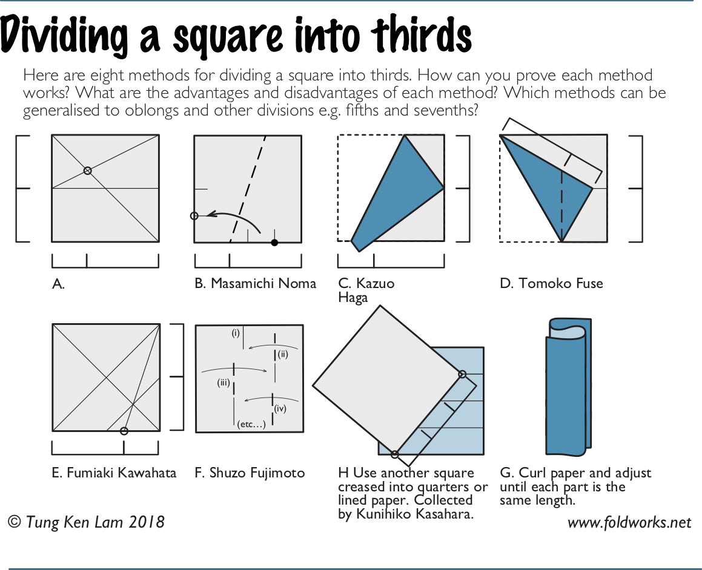
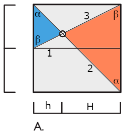
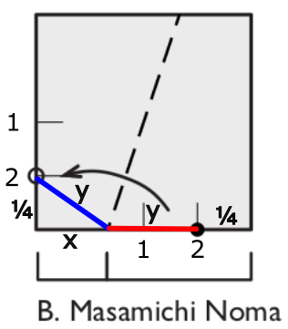
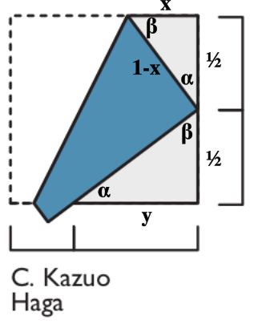
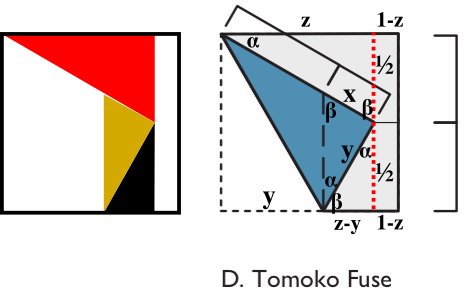
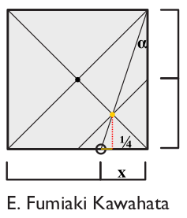
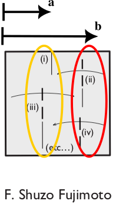
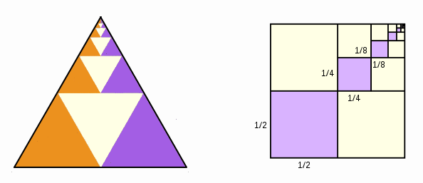
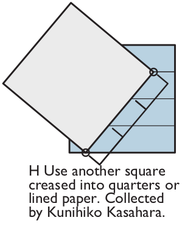
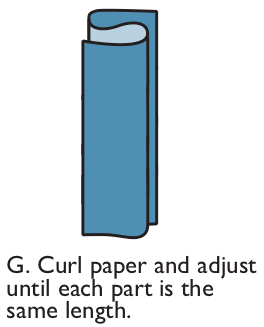

Fold into thirds
challenge
How to fold a square piece of paper into thirds? In this reddit post I found the following image. I’ll analyze each procedure, and try to explain why it works. We will assume that the square has side length 1.

method A
- Fold three creases in this order:
- 1 divides the paper in half horizontally;
- 2 connects opposing vertices;
- 3 makes the diagonal of the top rectangle.
- The blue and orange triangles are similar: the angle at their shared vertex is the same (vertical angle theorem), and the angles marked \(\alpha\) and \(\beta\) are also the same (alternate interior angle theorem).
- The base of the orange triangle (right side) is double the base of the blue triangle (left side) because crease 1 says so.
- Therefore the height \(H\) of the orange triangle is double the height \(h\) of the blue triangle (similarity): \(H=2h\).
- Because the side or the square is \(h+H = 3h\), the point marked with a circle divides the paper into thirds in the horizontal direction. \(\blacksquare\)

method B
- Step 1: crease the left and bottom sides at the middle.
- Step 2: crease again at the middle of the middle, making ¼ segments as shown in the figure.
- Join the two points marked with 2, and make a valley fold (dashed line). If you’re not familiar with origami this will be hard to understand, so take a piece of paper and try this out.
- The act of joining these points marked with 2 makes two line segments of equal size, marked as \(y\).
- Our job is to show that the segment marked with \(x\) equals one third.

From the small right-triangle on the bottom left, we use Pythagoras’ formula:
\[ \left(\frac{1}{4}\right)^2 + x^2 = y^2. \]
The bottom side of the square can be written as:
\[ x + y + \frac{1}{4} = 1 \quad\rightarrow\quad y = \frac{3}{4}-x. \]
Substitute this last equation into the first and solve for \(x\):
\[\begin{align} \frac{1}{16} + x^2 &= \left(\frac{3}{4}-x \right)^2\\ \frac{1}{16} + \cancel{x^2} &= \frac{9}{16} - 2\cdot\frac{3}{4}x + \cancel{x^2} \\ 1 &= 9 - 24x \\ x &= \frac{1}{3}. \end{align}\]
And this proves what we wanted to show. \(\blacksquare\)
method C
- Our goal here is to show that the segment marked with \(y\) equals two thirds.
- Crease the right side of the square at its center.
- Bring the top left corner to this middle point on the right.
- We see two gray triangles, and they are similar. To see why, we first notice that both are right triangles. Then we notice that the angle \(\alpha\) in the top triangle implies that the angle \(\beta\) in the bottom triangle is its complementary: \(\alpha + \beta = 90^\circ\). To prove this we use the fact that the angle in blue is a right angle. From there it’s clear that the left angle in the bottom triangle is also \(\alpha\). Since the two gray triangles share two angles, they are similar.

- The top triangle is completely determined, we know everything about it. One side is one half, and the other two sides are \(x\) and \(1-x\), since their sum is the side of the square. Let’s find \(x\) using Pythagoras’ formula: \[\begin{align} x^2 + \left(\frac{1}{2}\right)^2 &= (1-x)^2 \\ \cancel{x^2} + \frac{1}{4} &= 1 - 2x + \cancel{x^2} \\ 2x &= 1 - \frac{1}{4} \\ x &= \frac{3}{8}. \end{align}\]
- Let’s calculate the tangent of \(\alpha\) in the top triangle: \[ \tan\alpha = \frac{\text{opposite}}{\text{adjacent}} = \frac{3/8}{1/2} = \frac{3}{4}. \]
- Now let’s calculate the tangent of \(\alpha\) in the bottom triangle: \[ \tan\alpha = \frac{1/2}{y}, \] and that, of course, equals \(3/4\), giving us \[ \frac{1}{2y} = \frac{3}{4} \quad\rightarrow\quad y = \frac{2}{3}, \] and that proves what we wanted to show. \(\blacksquare\)
method D
- Crease the right side of the square at its center.
- Bring the left bottom corner to this middle height on the right. Attention, this is different from method C, where we brought the top left corner to the middle point on the right.
- Crease a vertical line from the bottom corner of the blue triangle. This vertical line will intersect the long side of the blue triangle, and the distance from this intersection to the corner of the square is \(x\).
- Our goal is to show that \(x\) equals one third.

This is a complicated proof, maybe there’s a simpler one, but bear with me.
- There are a few important right triangles that will help us. I painted them in different colors on the figure on the left, to help me explain what’s going on.
- Let’s start with the red triangle. It has sides of length \(z\), \(1/2\) and \(1\), and angles \(\alpha\), \(\beta\) and \(90^\circ\). Using Pythagoras’ formula we can find \(z\): \[\begin{align} z^2 + \left(\frac{1}{2}\right)^2 &= 1^2 \\ z^2 + \frac{1}{4} &= 1 \\ z^2 &= \frac{3}{4} \\ z &= \frac{\sqrt{3}}{2}. \end{align}\]
- Now let’s look at the black triangle. It is easy to show that it is similar to the red triangle. It’s sides are \(1/2\), \(z-y\) and \(y\). We already know \(z\), so we can use Pythagoras’ formula again to find \(y\): \[\begin{align} \left(\frac{1}{2}\right)^2 + (z-y)^2 &= y^2 \\ \frac{1}{4} + z^2 - 2zy + \cancel{y^2} &= \cancel{y^2} \\ \frac{1}{4} + \frac{3}{4} &= \cancel{2}\cdot \frac{\sqrt{3}}{\cancel{2}} y \\ y &= \frac{1}{\sqrt{3}} = \frac{\sqrt{3}}{3}. \end{align}\]
- Finally, we look at the yellow triangle. It is similar to the red and black triangles, and its legs are \(x\) and \(y\). Let’s calculate the tangent of \(\alpha\) in the red and yellow triangles, and equal them: \[\begin{align} \text{red: }\tan\alpha &= \frac{1/2}{z} = 1/\sqrt{3}, \\ \text{yellow: }\tan\alpha &= \frac{x}{y} = \sqrt{3}x \\ \text{therefore: } \sqrt{3}x &= \frac{1}{\sqrt{3}}\quad\rightarrow\quad x = \frac{1}{3}. \end{align}\] and that proves what we wanted to show. \(\blacksquare\)
method E
- Crease the two main diagonals. They meet at the black dot.
- Bring the right bottom corner to this black dot, and make another crease. This creates a line segment parallel to one of the diagonals, and it intersects the other diagonal at the point marked with a yellow circle.
- Crease a line connecting this yellow dot to the top right corner. This line will intersect the bottom side of the square at a distance \(x\) from the right corner.
- Our goal is to show that \(x\) equals one third.

- Draw a vertical line down from the yellow dot. I made it red and dotted.
- The tiny right triangle whose legs are the red dotted line and the yellow line is similar to the big right triangle whose legs are \(x\) and the right side of the square. They are both right triangles, and they share the angle that is complementary to \(\alpha\) (I didn’t give it a name because I didn’t have enough space.)
- To continue with this proof, we need to find the length of the red dotted line and the yellow line. I won’t do it here, but in the same way that the black dot is at half of the height of the square, the yellow dot is at one quarter of the height of the square, so the red dotted line is one quarter. I marked another line segment as \(1/4\), and this is true because it is the second leg of the small right and isoceles triangle whose first leg is the red dotted line. Finally, the length of the yellow line is clearly \(x-1/4\).
- Let’s calculate the tangent of \(\alpha\) of both triangles and equal them: \[\begin{align} \text{big: }\tan\alpha &= \frac{x}{1} = x, \\ \text{small: }\tan\alpha &= \frac{x-1/4}{1/4}\\ \text{therefore: } x &= \frac{x-1/4}{1/4} \quad\rightarrow\quad x = \frac{1}{3}, \end{align}\] and that proves what we wanted to show. \(\blacksquare\)
method F
This is an iterative method. I’ll call \(a\) and \(b\) the crease distance from the left side of the square.
- Guess a crease close to distance \(1/3\), I’ll call it \(a_1\).
- Make a crease at \(b_1\), midway between \(a_1\) and the right side of the square.
- Make \(a_2\), midway between the left side and \(b_1\).
- etc
I need to prove that the iterative method generates a series \(a_1, a_2, a_3,...\) that converges to \(1/3\).

- Given an initial guess \(a_1\), the position of \(b_1\) is completely determined. The distance between \(a_1\) and the right side of the square is \(1-a_1\) and half of that is \((1-a_1)/2\). Therefore we have that \[ b_1=a_1 + (1-a_1)/2. \]
- Now that \(b_1\) was found, \(a_2\) is determined. The distance between \(b_1\) and the left side is \(b_1\) itself, and half of it is the location of \(a_2\): \[ a_2 = \frac{a_1}{2} + \frac{1-a_1}{4} = \frac{2a_1-a_1+1}{4} = \frac{1}{4}+\frac{a_1}{4}. \]
- We found an expression for \(a_2\) in terms of \(a_1\). Clearly, the relationship between \(a_3\) and \(a_2\) will be the same: \[\begin{align} a_{3} &= \frac{1}{4}+\frac{a_2}{4} \\ &= \frac{1}{4}+\frac{1}{4}\left(\frac{1}{4}+\frac{a_1}{4}\right) \\ &= \frac{1}{4}+\frac{1}{4^2} + \frac{1}{4^2}a_1. \end{align}\]
- Similarly for \(a_4\): \[\begin{align} a_{4} &= \frac{1}{4}+\frac{a_3}{4} \\ &= \frac{1}{4}+\frac{1}{4}\left(\frac{1}{4}+\frac{1}{4^2} + \frac{1}{4^2}a_1\right) \\ &= \frac{1}{4}+\frac{1}{4^2} + \frac{1}{4^3} + \frac{1}{4^3}a_1. \end{align}\]
- A clear pattern emerges. Taking this iterative process to the limit: \[\begin{align} a_\infty = \lim_{n\to\infty}\left[ \sum_{i=1}^{n-1} 4^{-i} + 4^{-(n-1)}a_1 \right] \end{align}\]
- The second term vanishes in the limit to infinity. The result doesn’t care about our initial choice for the position of the first crease.
- The position of the crease \(a\) goes to \[ a = \sum_{i=1}^{\infty} 4^{-i}. \] To evaluate this, let’s multiply both sides by 4: \[\begin{align} 4a &= \sum_{i=1}^{\infty} 4^{1-i} \\ 4a &= 1 + \sum_{i=1}^{\infty} 4^{-i} \\ 4a &= 1 + a \\ 3a &= 1 \\ a &= \frac{1}{3}. \end{align}\] And that proves what we wanted to show. \(\blacksquare\)
A nice visual proof of this infinite sum is the following:

method H
Yes, I now realize that the diagram shows H before G… But this is not my diagram, and I’m not touching it…

This is justified by Thales’s intercept theorem. In simple words, it states that if we have a set of parallel lines, and two transversals that intersect them, then the segments determined by the first transversal are in the same ratio as the segments determined by the second transversal.
- The parallel lines are the creases of the blue paper, which was folded into fourths.
- The transversals are the right side of the blue square and the bottom-right side of the gray square.
- The first transversal is divided into three equal segments, so the second transversal is also divided into three equal segments. \(\blacksquare\)
This method has the advantage that now you can divide the paper into any number of equal segments, not just three. For example, if you need to divide a square into fifths, fold another square into eighths and use the same method (It’s easy to fold into powers of two)
method G
This is the “let’s eyeball it” method. If the paper is flexible enough, it might prove to be the easiest method :)

practical tip
If you have a project that demands many pieces of paper folded into thirds, do yourself a favor and make a template. Fold one piece of paper into thirds using any of the methods above, and then use it as a template to fold the rest of the pieces.